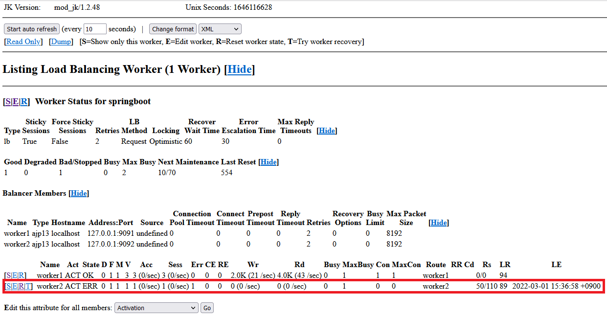
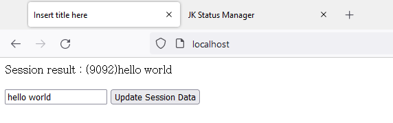

[Java] 61. Spring bootでRedisデータベースを利用してセッションクラスタリング設定する方法
こんにちは。明月です。
この投稿はSpring bootでRedisデータベースを利用してセッションクラスタリング設定する方法に関する説明です。
以前の投稿でApacheとSpring bootのTomcatを連結してロードバランシングする方法に関して説明しました。
リンク - [Java] 60. Spring bootでApacheの連結とロードバランシングを設定する方法
ロードバランシングは一応ウェブ環境で数多くトラフィック(接続)が発生するとウェブサーバーもブラウザ(クライアント)とソケット通信するコネクションがあるリソースなので同時に発生すればその接続と応答が遅くなるしかないです。また、ウェブサーバー環境に要請する処理が複雑になれば処理がもっと遅くなるでしょう。
それで接続キャッシングはApacheで管理して、動的ウェブ処理(Htmlパッシング処理)はアプリケーションサーバー(WAS:Tomcat)で管理します。また、その負荷がもっと多くなると、Tomcatを複数に分けてロードバランシングで管理することで大容量のトラフィックを処理します。
一旦、以前の投稿で簡単に説明しましたが、Apacheで同じSessionなら同じTomcatを要請するように設定しましたが、状況により1番のTomcatで要請応答したコネクションが2番のTomcatに転換する場合もあります。
その状況というのはいきなり1番のTomcatがショットダウンしたり、急に一つのサーバーに大容量のトラフィックが発生するとApacheのロードバランシングが移動させます。その以外の様々な状況がありますが、代表的にはその二つのケースではないかと思います。
ここで問題が発生することがセッションです。
セッションというのは簡単に説明します。
ブラウザで各サイトに接続するたびにローカルで格納しているデータでクッキーということがあります。
上のヘッダー情報は私がブラウザでブラぐを接続する時の接続情報です。ここではクッキーの値がアルゴリズムで暗号化になっています。
暗号化になっていても、このクッキーというのはブラウザでデータを見ることができます。このデータをなぜブラウザで持っているかを説明するとブラウザの歴史の内容まで説明しなければならないので説明しにくいですが、簡単に説明するとウェブプロトコール仕様はソケット非同期の形、つまり、ソケットで要請する時接続して応答すると接続を切断する流れです。
つまり、ウェブサーフィンする時にウェブサーバーとずっと連結しているままではなく、ページ移動する時だけサーバーに要請してデータを取得する流れですえん。でも、ウェブサーバーに接続する人が私だけではなく、数多い人が同時に接続すると思えば要請が誰の要請が分からないでしょう。
そのために要請するたびにデータを送って区分をするためにクッキーというのがありますが、このクッキーの問題がセキュリティが悪いですね。
上のイメージでもブラウザの開発モードで値がすべて見えますね。それでその値をクライアント(ブラウザユーザー)には見えないのために無作為のユニーク文字列を生成してクッキーキーで設定してサーバーのメモリあるいはファイルでデータを格納する流れがセッションということです。
セッションというのはTomcatサーバーではメモリのデータを格納します。
それでロードバランシングの状況でユーザーが1番のTomcatに接続してセッション情報、ログイン情報を持っていいる状況で2番のTomcatに転換する状況に発生するとどうようになるでしょう？
そうです。2番のTomcatにはセッション情報をもってないため、ログインが解けることになります。
それでこのセッション情報を1番のTomcatと2番のTomcat、または数多くのTomcatのセッションは共有されなければならないです。それをセッションクラスタリングと言います。
セッションクラスタリングの方法は様々方法がありますが、共有ファイルサーバーでファイルでセッションを管理することもできるし、データベースで管理することもありす、様々な方法があります。でも、ロードバランシングの段階まで届いたらもう大容量のトラフィックの条件になったと意味でしょう。
つまり、共有セッションに値を追加、修正、取得の要請、応答が早ければならないし、時間帯別で処理基準が正確に同期化にならなければならないです。(つまり、データベースの処理速度で役0.1秒前に要請した処理(修正)が完了せずに別のサーバーの取得要請が0.2秒前のデータを取得する流れ)
この数多くの条件を満たすデータベースはRedisです。
Redisデータベースが万能ではありませんが、個人的にセッションクラスタリングで一番早いし正確だと思います。個人的の考えなので別の意見がもちろんあります。
Redisデータベースをインストールする方法と使い方に関しては別の投稿で説明したことがあります。
リンク - [CentOS] Redisデータベースをインストールする方法とコマンドを使い方
これからSpring bootでRedisを使うためにはまず、Spring bootウィザードでRedisライブラリを追加するかpom.xmlを追加しなければならないです。
参考でこれがEclipseのバグかどうか知りませんが、ウィザードで設定すると既存に選択したことをすべて選択しなければならないです。以前に選択したことを選択しなくてFinishを押下すると既存のライブラリがすべて解除される現象になります。
pom.xmlにライブラリが追加されることを確認できます。
またはウィザードではなく直接にpom.xmlに追加する方法もあります。
リンク - https://mvnrepository.com/artifact/org.springframework.boot/spring-boot-starter-data-redis
<dependency>
<groupId>org.springframework.boot</groupId>
<artifactId>spring-boot-starter-data-redis</artifactId>
</dependency>
そして我々はSpring bootでただ、Redisを使うことではなくセッションクラスタリングで使うでしょう。その為、セッションクラスタリングのライブラリも追加しましょう。
リンク - https://mvnrepository.com/artifact/org.springframework.session/spring-session-data-redis
<dependency>
<groupId>org.springframework.session</groupId>
<artifactId>spring-session-data-redis</artifactId>
</dependency>
mavenライブラリの追加は完了しました。
実際のプロジェクトでsessionをRedisデータベースで使うように設定しましょう。
Spring bootのmain関数があるクラスに@EnableRedisHttpSessionアノテーションを追加することでセッションをRedis データベースで使うことになります。
package com.example.demo;
import org.springframework.boot.SpringApplication;
import org.springframework.boot.autoconfigure.SpringBootApplication;
import org.springframework.session.data.redis.config.annotation.web.http.EnableRedisHttpSession;
// Spring boot의 baseパッケージ
@SpringBootApplication(scanBasePackages = "com.example.demo.*")
// Redisセッション使用
@EnableRedisHttpSession
// クラス
public class SpringBootTestApplication {
// メイン関数
public static void main(String[] args) {
// 実行
SpringApplication.run(SpringBootTestApplication.class, args);
}
}
ソース設定が完了したら、application.propertiesで Redisデータベース情報を設定しましょう。
# redisデータベースがあるサーバーのip
spring.redis.host=localhost
# redisデータベースがあるサーバーのport
spring.redis.port=6379
私はlocalhostにインストールされていることではなく、別のサーバーに設定されているのでipアドレスとを入力しました。
そして既存のプロジェクトにはただ、画面にhello world表示することしかないので、セッションを格納するコードを作成しましょう。
package com.example.demo.Controller;
import javax.servlet.http.HttpSession;
import org.springframework.beans.factory.annotation.Value;
import org.springframework.stereotype.Controller;
import org.springframework.ui.Model;
import org.springframework.web.bind.annotation.RequestMapping;
import org.springframework.web.bind.annotation.RequestParam;
import org.springframework.web.bind.annotation.ResponseBody;
// コントローラーアトリビュート
@Controller
// Controllerクラス
public class HomeController {
// application.propertiesで設定値を受け取る。
@Value("${tomcat.ajp.port}")
private int port;
// マッピングアドレス
@RequestMapping(value = { "/", "/index.html" })
public String index(Model model, HttpSession session) {
// データをテンプレートに渡す
model.addAttribute("data", session.getAttribute("session"));
// テンプレートファイル名
return "Home/index";
}
// マッピングアドレス
@RequestMapping(value = { "/setSessionData.json" })
// Stringデータをリターンする。
@ResponseBody
public String setSessionData(@RequestParam("data") String data, Model model, HttpSession session) {
// セッションに値を登録
session.setAttribute("session", "(" + port + ")" + data);
// 結果のjson値
return "{\"result\":\"OK\"}";
}
}
メイン画面にはセッションの値があればsessionのキーで値を取得して画面に出力します。
そしてsetSessionData.jsonのアドレスで非同期の形のdata値を受け取ります。そしてsessionのキーでデータをセッションに格納します。
上の仕様に合わせてhtmlファイルも修正しましょう。
<!DOCTYPE html>
<html>
<head>
<title>Insert title here</title>
</head>
<body>
Session result :
<span th:text="${data}">message</span>
<br />
<br />
<input type="text" id="sessionText">
<button id="updateBtn">Update Session Data</button>
<script>
document.addEventListener('DOMContentLoaded',() => {
document.getElementById("updateBtn").addEventListener("click", ()=>
{
// ajaxするためのXmlHttpRequestオブジェクト
let xhttp = new XMLHttpRequest();
// XmlHttpRequestの要請
xhttp.onreadystatechange = (e)=>{
// XMLHttpRequestをイベントパラメータで取得
let req = e.target;
// 通信状態が完了になれば、
if(req.readyState === XMLHttpRequest.DONE) {
// Http response応答コードが200(正常)なら
if(req.status === 200) {
// jsonタイプなのでobjectタイプに変換
console.log(JSON.parse(req.responseText));
}
}
}
// http要請タイプとアドレス、同期の可否
xhttp.open("POST", "setSessionData.json", false);
// formタイプ
xhttp.setRequestHeader('Content-type', 'application/x-www-form-urlencoded');
// http要請
xhttp.send("data=" + document.getElementById("sessionText").value);
});
});
</script>
</body>
</html>
最初、spanタグにはsessionから取得した値を出力して、次のラインではTextBoxとButtonでsetSessionData.jsonの非同期アドレスでセッションを登録します。
その後でページをリフレッシュすると画面にセッション値が出力される流れで作成しました。
テキストで値を入れてボタンを押下しましょう。
コンソールでokがなったことを確認できます。また、ページを再要請しましょう。
そうすると画面に(9091)hello worldという結果が表示することを確認できます。
9091の理由はAJP例で設定した値です。
実際にRedisデータベースを確認するとSessionが登録されていることを確認できます。
ここまでSpring bootでRedisデータベースを利用したセッションクラスタリングが設定されていることを確認できます。
それならロードバランシング環境にもしっかり動いているかを確認しましょう。
リンク - [Java] 60. Spring bootでApacheの連結とロードバランシングを設定する方法
上の例で設定したことと同じく、Apacheを実行してSpring bootプロジェクトを二つの場所にコピーして実行しましょう。
実行してテキストにデータを入力してボタンを押下した後でセッションを確認すれば上の例では9092の二つ目のTomcatに連結されていることを確認できます。
ここで、私が二つ目のTomcatを実行中止します。
終了しました。

2番目のサーバーが確実にショットダウンしたことを確認できます。
それでまた、ウェブページをリフレッシュしましょう。

AJPポートが9092サーバーは確実にショットダウンしましたが、AJPポートが9091が1番サーバーはそのままにセッションを保持することを確認できます。
サーバーが一つショットダウンしてもウェブサーバーがそのままに運用できることを確認できますね。
ここまでSpring bootでRedisデータベースを利用してセッションクラスタリング設定する方法に関する説明でした。
ご不明なところや間違いところがあればコメントしてください。
- [Java] 63. Spring bootでcronスケジューラとComponentアノテーション2022/03/16 18:57:30
- [Java] 62. Spring bootでWeb-Filterを設定する方法(Spring Security)2022/03/15 22:16:37
- [Java] 61. Spring bootでRedisデータベースを利用してセッションクラスタリング設定する方法2022/03/01 18:20:52
- [Java] 60. Spring bootでApacheの連結とロードバランシングを設定する方法2022/02/28 18:45:48
- [Java] 59. Spring bootのJPAでEntityManagerを使い方2022/02/25 18:27:48
- [Java] 58. EclipseでSpring bootのJPAを設定する方法2022/02/23 18:11:10
- [Java] 57. EclipseでSpring bootを設定する方法2022/02/22 19:04:49
- [Java] 56. Web serviceのサーブレット(Servlet)で初期化作業(properties設定)2021/07/02 17:10:36
- [Java] 55. Spring frameworkに文字化けを解決する方法(Encoding設定)2021/06/30 16:37:16
- [Java] 54. Spring frameworkでWeb filterを使う方法2021/06/29 18:25:12
- [Java] 63. Spring bootでcronスケジューラとComponentアノテーション2022/03/16 18:57:30
- [Java] 62. Spring bootでWeb-Filterを設定する方法(Spring Security)2022/03/15 22:16:37
- [Java] JWT(Json Web Token)を発行、確認する方法2022/03/14 19:12:58
- [Java] 61. Spring bootでRedisデータベースを利用してセッションクラスタリング設定する方法2022/03/01 18:20:52
- [Java] 60. Spring bootでApacheの連結とロードバランシングを設定する方法2022/02/28 18:45:48
- [Java] 59. Spring bootのJPAでEntityManagerを使い方2022/02/25 18:27:48
- [Java] 58. EclipseでSpring bootのJPAを設定する方法2022/02/23 18:11:10
- [Java] 57. EclipseでSpring bootを設定する方法2022/02/22 19:04:49
- [Python] Redisデータベースに接続して使い方2022/02/21 18:23:49
- [Java] Redisデータベースを接続して使い方(Jedisライブラリ)2022/02/16 18:13:17
- [C#] Redisのデータベースを接続して使い方2022/02/15 18:46:09
- [CentOS] Redisデータベースをインストールする方法とコマンドを使い方2022/02/14 18:33:07
- [Design pattern] 3-6. ステートパターン(State pattern)2021/11/17 20:04:47
- [Design pattern] 3-5. メメントパターン(Memento pattern)2021/11/16 20:01:36
- [Design pattern] 3-4. イテレータパターン(Iterator pattern)2021/11/15 19:31:28